Gyms & Trainers
COBBLEVERSE replaces free-form gym battles with the Radical Cobblemon Trainers (RCT) system: about 380 named story trainers spawn in the world (the RCT mod also bundles roughly 1,300 more for its optional Radical Red, Unbound and BDSP side series), and your journey is organized into series — Kanto, then Johto, Hoenn and Sinnoh — each with eight Gym Leaders, an Elite Four and a Champion. Every player starts in the Kanto series (difficulty 7/10); completing a region's Champion unlocks the next series at the Trainer Association. Gym Leaders hand out badges and TMs on your first win, and each victory raises your Pokémon level cap. Three extra series ship with the RCT mod itself — Radical Red, Unbound and BDSP — but they are side content, not part of the COBBLEVERSE storyline: their leaders spawn naturally in tagged biomes instead of using the pack's gym structures, they award no COBBLEVERSE badges, and BDSP's title in this pack is literally "WORK IN PROGRESS". They are omitted below.
How trainer battles work
The Trainer Card. Trainers only spawn naturally around players carrying a Trainer Card (shaped recipe: paper, glass pane, name tag, redstone). Right-click it to see your current series, level cap, and your next required trainers — including each one's signature item and the biomes it can appear in.
Natural spawning. The server config (rctmod-server.toml) makes a spawn attempt for each player every 600 ticks (30 s) at 55% chance, stretching to one attempt per 2 minutes at 15% chance as you approach your personal cap of 6 trainers per player (60 total). Trainers appear 25-70 blocks away, and despawn after 5 minutes with no line of sight to a player. Trainers whose strongest Pokémon is more than ~10 levels above your strongest (scaled down at low levels, minimum 4) will not spawn for you — key trainers are exempt from this check. A trainer who spots you within 16 blocks will lock eyes and force a battle after about 1.5 seconds, but only if their team is within 12 levels of yours. A craftable Trainer Repel Rod (copper, iron, redstone torch) blocks natural trainer spawns around it.
Level cap. You start with an effective cap of 25 — the configured floor of 20 never binds, because the cap tracks your next required trainer. Your cap is always the level of the strongest Pokémon on your next required trainer's team plus 5, and Pokémon at the cap gain no experience — beat the next Gym Leader to raise it. The Freeroam series (unlocked at the Trainer Association after completing any series) pauses progression with a level cap of 100.
Gym Leaders are summoned, not found wandering. Every Gym Leader, Elite Four member and Champion in the four story series has spawnWeightFactor: 0 — they never spawn naturally. Instead each one appears from a Trainer Spawner block pre-placed inside a generated gym structure, which summons its leader when a challenger comes near. Finding the gym works like this:
- Craft the leader's signature item — e.g. Brock's Onyx Stone from hard stone, coal and stone. Its tooltip reads "Required item to locate Brock's Gym".
- Insert it into the matching region Cartography Table — a cheap craft (the Kanto Cartography Table is planks + Poké Ball + paper) — to receive a treasure map marking that leader's gym. A Map Trader block in Cobblemon town buildings (Lodge, taverns) trades the same maps for an empty map, as an alternative while exploring.
- Each gym generates only in specific biomes (listed per leader below), which the Trainer Card also shows. Two Kanto gyms leave the Overworld entirely: Blaine's sits in the Nether's Crimson Forest and Giovanni's in the Deep Dark, while the Kanto and Johto Leagues tower over the End Highlands.
Battle rules and order. Trainers enforce the series progression: a leader challenged out of order refuses with "you need more badges"-style dialog, driven by each trainer's requiredDefeats chain. Leaders carry battle bags (Full Restores, capped by maxItemUses — 2 for Brock up to 6 for Champions) and battle with full-IV, EV-trained teams. Each key trainer can only be defeated once per player (badge and TM loot rolls on that first victory); the one exception is Hoenn's Champion Rocco, who accepts up to 5 rematches and drops Ruby Dew and Sapphire Dew every time. After losing you can retry after a 12-second cooldown.
The Trainer Association. An Association NPC spawns near villages and near card-carrying players who have finished (or not yet started) a series. Talk to it to start or switch series — switching resets your current series progression, but every completed series permanently increases your luck for better trainer loot. Johto requires completing Kanto, Hoenn requires Johto, and Sinnoh requires Hoenn; after the first player beats a region's Champion, the reward book instructs the host to restart the world/server once so the next region's structures begin generating.
Build your own spawner. The Trainer Spawner block is craftable (diamond, redstone, stone bricks and slabs). Right-click it with any trainer's signature item to configure it — this is what the craftable Elite Four signature items (Bug Net, Fire Flint, Dragon Cap and friends) are for, letting you stage league rematches at home.
Kanto series
| Gym Leader | Lv | Badge | Signature item | Biomes |
|---|---|---|---|---|
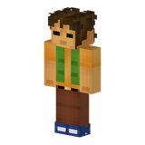 Brock | 16-20 | 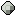 Boulder Badge (Brock) | 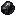 Onyx Stone | Plains |
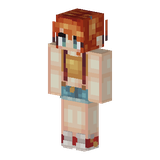 Misty | 23-25 | Cascade Badge (Misty) | Cerulean Star | Lukewarm Ocean |
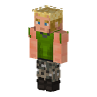 Lt. Surge | 32-35 | Thunder Badge (Lt. Surge) | Lieutenant Medal | Savanna Plateau |
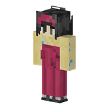 Erika | 38-40 | Rainbow Badge (Erika) | Nature Fan | Flower Forest |
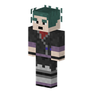 Koga | 49-50 | Soul Badge (Koga) | Ninja Poison | Swamp |
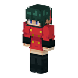 Sabrina | 52-55 | Marsh Badge (Sabrina) | 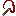 Hypnotic Whip | Dark Forest |
| Blaine | 57-60 | Volcano Badge (Blaine) | Cinnabar Glasses | Crimson Forest (Nether) |
| Giovanni | 68-70 | Earth Badge (Giovanni) | Boss Ring | Deep Dark (Ancient City Biomes) |
Elite Four: Lorelei · Lv 75 Bruno · Lv 80 Agatha · Lv 85 Lance · Lv 90
Champion: Blue · Lv 100
Johto series
| Gym Leader | Lv | Badge | Signature item | Biomes |
|---|---|---|---|---|
| Valerio | 18-20 | Zephyr Badge (Valerio) | 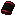 Raptor Bracer | Windswept Hills |
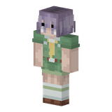 Raffaello | 27-30 | Hive Badge (Raffaello) | Magnifying Glass | Sparse Jungle |
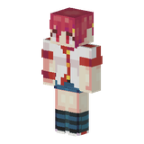 Chiara | 33-35 | Plain Badge (Chiara) | Sweet Milk | Cherry Grove |
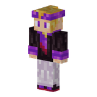 Angelo | 43-45 | Fog Badge (Angelo) | Spirit Scarf | Lush Caves |
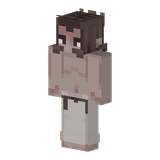 Furio | 48-50 | Storm Badge (Furio) | Heavy Dumbbell | Desert |
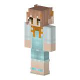 Jasmine | 58-60 | Mineral Badge (Jasmine) | Secret Medicine | Taiga |
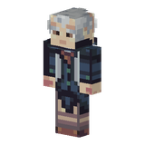 Alfredo | 63-65 | Glacier Badge (Alfredo) | 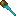 Winter Staff | Ice Spikes |
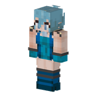 Sandra | 70 | Rising Badge (Sandra) | Pearl Choker | Soul Sand Valley (Nether) |
Elite Four: Pino · Lv 75 Koga · Lv 80 Bruno · Lv 85 Karen · Lv 90
Champion: Lance · Lv 100
Hoenn series
Terralith-DP.zip add-on must be enabled too — see World & Regions.| Gym Leader | Lv | Badge | Signature item | Biomes |
|---|---|---|---|---|
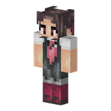 Petra | 19-21 | Stone Badge (Petra) | Rock Tome | Rocky Mountains |
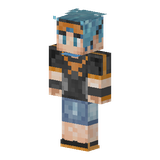 Rudi | 27-30 | Knuckle Badge (Rudi) | Fighting Glove | Yosemite Cliffs |
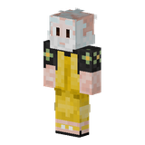 Walter | 33-36 | Dynamo Badge (Walter) | 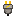 Electric Connector | Arid Highlands |
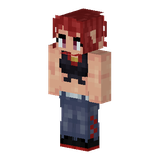 Fiammetta | 38-42 | Heat Badge (Fiammetta) | Fire Lighter | Forested Highlands |
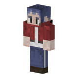 Norman | 48-50 | Balance Badge (Norman) | Normal Tablet | Brushland |
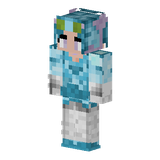 Alice | 52-56 | Feather Badge (Alice) | Flying Feather | Moonlight Grove |
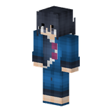 Tell | 60-62 | Mind Badge (Tell & Pat) | Psychic Medallion | Amethyst Rainforest |
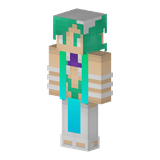 Adriano | 70 | 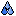 Rain Badge (Adriano) | Water Rod | Cold Ocean |
Elite Four: Fosco · Lv 77 Ester · Lv 82 Frida · Lv 86 Drake · Lv 91
Champion: Rocco · Lv 100
Sinnoh series
Terralith-DP.zip add-on must be enabled too — see World & Regions.| Gym Leader | Lv | Badge | Signature item | Biomes |
|---|---|---|---|---|
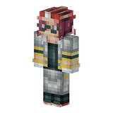 Pedro | 26-30 | Coal Badge (Pedro) | Rock Casque | Volcanic Peaks |
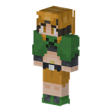 Gardenia | 32-36 | Forest Badge (Gardenia) | Grass Aroma | Blooming Valley |
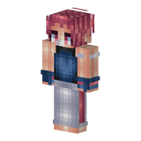 Marzia | 40-43 | Cobble Badge (Marzia) | Fighting Bandage | Lush Desert |
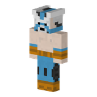 Omar | 45-49 | Fen Badge (Omar) | Water Mask | Beach |
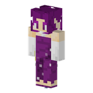 Fannie | 53-55 | Relic Badge (Fannie) | 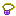 Ghost Pendant | Lavender Valley |
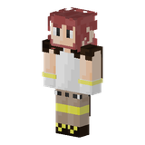 Ferruccio | 57-60 | Mine Badge (Ferruccio) | 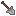 Steel Spade | Volcanic Crater |
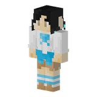 Bianca | 66-67 | Icicle Badge (Bianca) | Ice Ribbon | Glacial Chasm |
| Corrado | 75 | Beacon Badge (Corrado) | 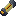 Electric Fuse | Shrubland |
Elite Four: Aaron · Lv 82 Terrie · Lv 84 Vulcano · Lv 86 Luciano · Lv 90
Champion: Camilla · Lv 100